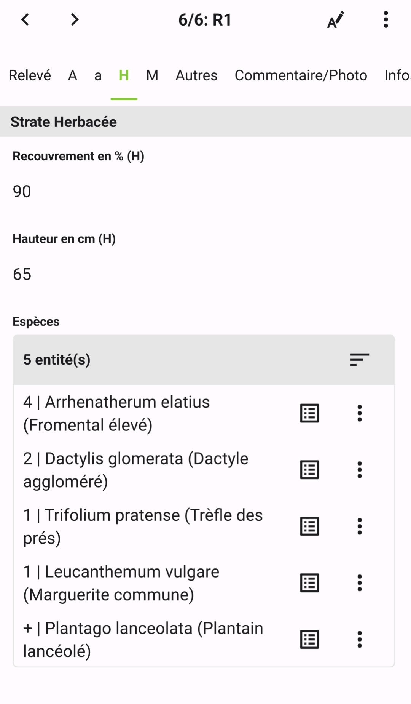
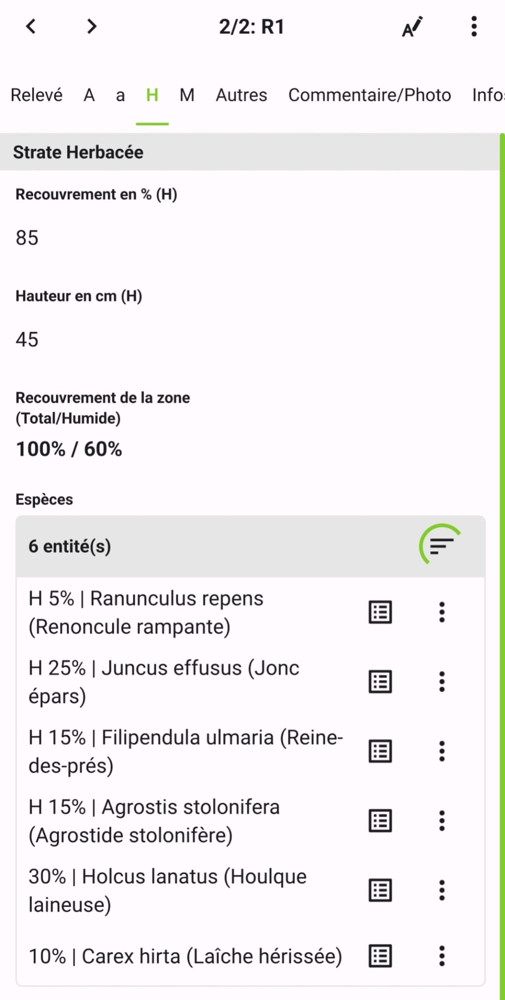

Relevés phytosociologiques¶
Le module Relevé permet de réaliser des relevés floristiques structurés par strate, utilisables aussi bien en phytosociologie classique qu'en cadre de caractérisation de zones humides. Chaque relevé est un point sur la carte, et regroupe l'ensemble des observations de flore qui lui sont rattachées.
Principe¶
Un Relevé est un point localisé représentant la station relevée. La surface prospectée est renseignée dans le formulaire. Les observations de flore sont saisies strate par strate, directement depuis les onglets du relevé. Cela garantit le lien entre chaque observation et son relevé, et permet de visualiser en temps réel les espèces déjà saisies pour éviter les doublons.
Le relevé est compatible avec deux contextes :
- Phytosociologique — les espèces sont quantifiées avec l'indice d'abondance-dominance de Braun-Blanquet (r, +, 1, 2, 3, 4, 5).
- Zone Humide — les espèces sont quantifiées par leur pourcentage de recouvrement sur la zone, dans le cadre d'un diagnostic de zone humide floristique.
Le type de relevé se sélectionne dans le formulaire et conditionne l'affichage des indicateurs dans les onglets de strate.
Créer un relevé¶
Un Relevé peut être créé depuis QGis en amont de la session ou directement sur le terrain depuis QField.
Informations générales¶
Nom — identifiant du relevé.
Type — Phytosociologique ou Zone Humide. Ce choix influe sur l'affichage dans les onglets de strate.
Contexte de la station¶
Habitat — lien vers une typologie d'habitat (récupérée automatiquement si le relevé se situe sur un polygone Habitat).
Zone Humide — lien vers une zone humide (récupérée automatiquement si le relevé se situe sur un polygone Zone Humide).
Exposition — exposition (N, NE, E, SE, S, SO, O, NO).
Altitude — altitude à renseigner en mètres (récupérée automatiquement à partir du GPS sur le terrain).
Surface — surface du relevé à renseigner en m².
Pente — pente à renseigner en pourcentage.
Topographie — topographie générale : Plane, Inclinée, Concave ou Convexe.
Roche — nature du substrat rocheux (texte libre).
Etat écologique — état de conservation de la végétation (texte libre).
Gestion — mode de gestion actuel ou récent (texte libre).
Dynamique — dynamique de végétation observée (texte libre).
Saisir les espèces par strate¶
Le formulaire comporte quatre onglets de strate : A (Arborée), a (Arbustive), H (Herbacée), M (Muscinale). Chaque onglet est structuré de la même façon.
En haut de chaque onglet :
Recouvrement — recouvrement global de la strate (%).
Hauteur — hauteur moyenne de la strate (cm).
Pour un relevé de type Zone Humide, un indicateur s'affiche dans chaque onglet pour indiquer la somme du recouvrement total et du recouvrement par des espèces hygrophiles au niveau de la strate.
En dessous, la liste des espèces déjà saisies dans cette strate s'affiche. Pour ajouter une espèce, appuyer sur + — le formulaire Flore P s'ouvre, avec le relevé et la strate pré-renseignés.
Avantages de la saisie depuis les onglets de strate¶
Pour les relevés phytosociologiques, l'indice Braun-Blanquet (Rec_ph) s'affiche dans la liste à côté du nom de l'espèce. Cela permet d'avoir un aperçu en direct de l'avancement du relevé.

Pour les relevés de zones humides, le pourcentage de recouvrement et le caractère humide de l'espèce sont visibles directement dans la liste. Ces informations sont sommées au niveau de la strate pour permettre de déterminer le caractère humide de la zone.

Onglet Autres¶
L'onglet Autres regroupe deux champs complémentaires sur la structure du sol :
Sol nu — recouvrement du sol nu (%).
Litière — recouvrement de la litière (%).
Ces valeurs permettent de compléter le bilan de recouvrement total de la station (strates + sol nu + litière).
Lien avec les autres modules¶
Un relevé peut être associé à un habitat cartographié (chapitre Cartographie d'habitats) via le champ Habitat, et à une zone humide (chapitre Zones humides) via le champ ZH.
Inversement, depuis le formulaire d'une observation Flore, le champ Releve permet de rattacher l'observation à un relevé existant — utile pour des espèces saisies en dehors du contexte du relevé mais à y intégrer.������������������������������������������������������������������������������������������������������������������������������������������������������������������������������������������������������������������������������������������������������������������������������������������������������������������������������������������������������������������������������������������������������������������������������������������������������������������������������������������������������������������������������������������������������������������������������������������������������������������������������������������������������������������������������������������������������������������������������������������������������������������������������������������������������������������������������������������������������������������������������������������������������������������������������������������������������������������������������������������������������������������������������������������������������������������������������������������������������������������������������������������������������������������������������������������������������������������������������������������������������������������������������������������������������������������������������������������������������������������������������������������������������������������������������������������������������������������������������������������������������������������������������������������������������������������������������������������������������������������